Livingstone’s Birthplace at Blantyre. Illustration from R.B. Dawson, Livingstone the Hero of Africa (London: Seely, Service & Co., 1918), opposite 32. Courtesy of the Internet Archive. Livingstone’s working class background has been romanticised by many of his biographers, who have presented him as an exemplar of Victorian self-improvement. This artistic representation of Livingstone’s family home, which was tenement housing provided for Blantyre cotton mill employees, participates in such idealisation through a romanticized depiction of workers’ living quarters in nineteenth-century industrial Scotland.
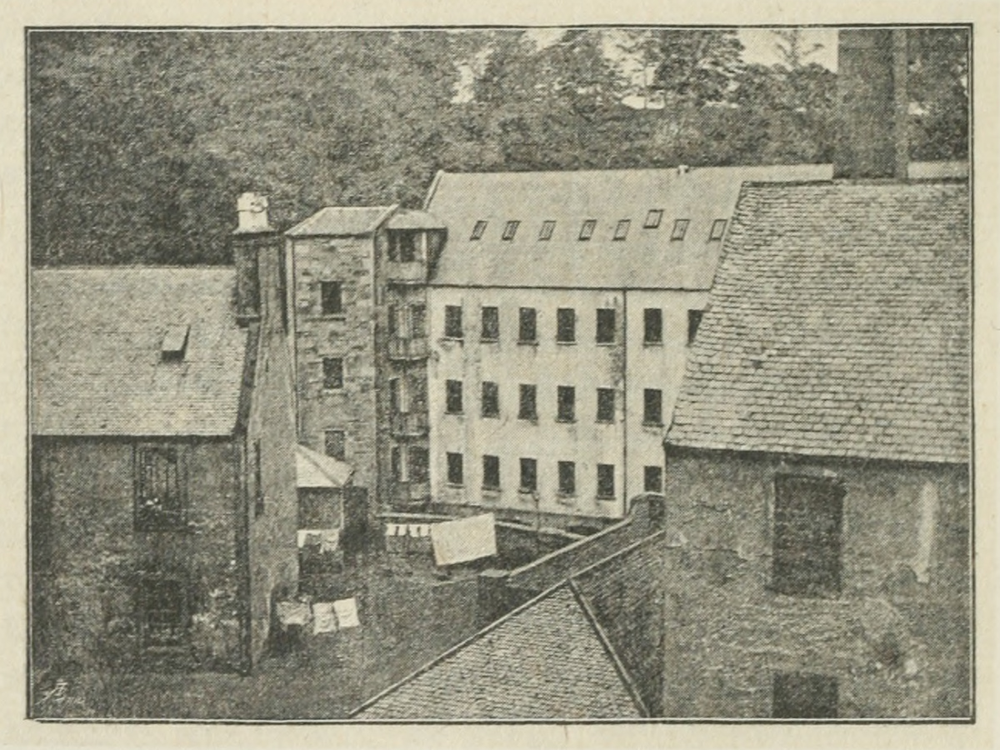
Factory at Blantyre. Illustration from H. H. Johnston, Livingstone and the Exploration of Central Africa (London: George Philip & Son, 1891), 56. Courtesy of the Internet Archive. This reproduction of an a nineteenth-century photograph of Blantyre provides a more sobering representation of the working conditions of Livingstone’s early life when compared to Dawson's more artistic rendering (see prior image).
| 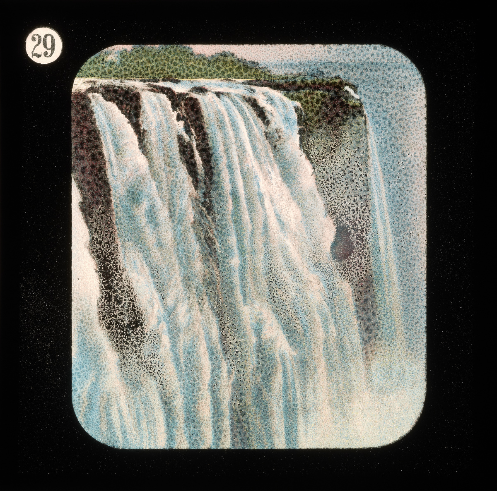 | 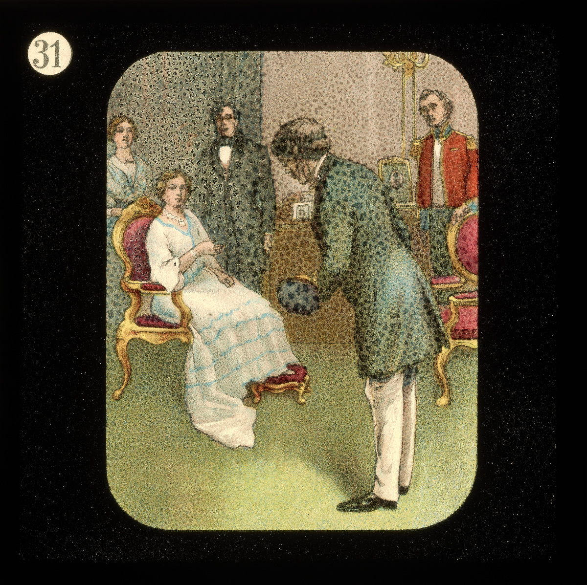 |
(Left; top in mobile) Victoria Falls. (Right; bottom in mobile) Livingstone sees the Queen. Images from Lantern Slides of the Life, Adventures, and Work of David Livingstone (London Missionary Society c.1900:[3]-[4]). Images courtesy of the Smithsonian Libraries, Washington, D.C. The London Missionary Society participated in cultivating Livingstone’s posthumous reputation by producing a series of thirty-nine magic lantern slides depicting iconic moments from his life. The inclusion of Livingstone’s audience with Queen Victoria, shown here alongside a representation of Victoria Falls (Livingstone's greatest feat of “exploration”), suggests that propriety and respectability were characteristics that the London Missionary Society – like the John Murray publishing house – aimed to associate with its representatives.

Bushman’s camp. Illustration from J. E. Chambliss, The Life and Labors of David Livingstone, LL.D., D.C.L. (Philadelphia, Boston, and Cincinnati: Hubbard Bros., 1875), 69. Courtesy of the Internet Archive. The indigenous hunter-gatherer peoples of southern Africa, collectively known as the San (historically “Bushmen,” now a pejorative term), became the subject of much speculative evolutionary science when descriptions began to circulate from the 1840s onward in the wake of European travel through the Kalahari. This illustration demonstrates how the San’s semi-nomadic lifestyle could attract racial stereotyping in nineteenth-century literature.
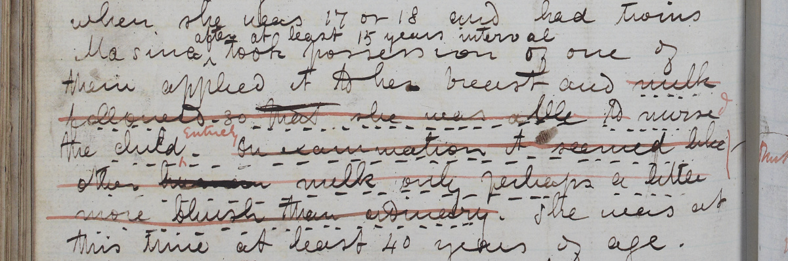
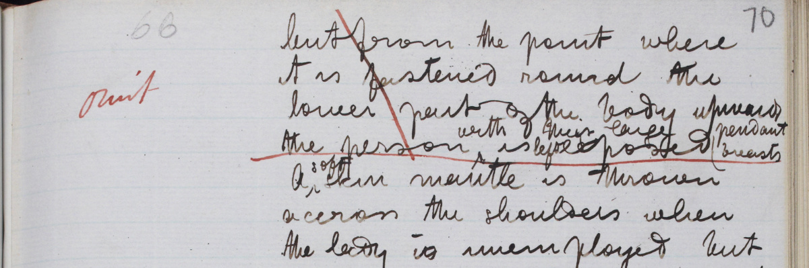
Images of two page segments from the Missionary Travels manuscript (Livingstone 1857bb[312], 1857cc:[71]), detail in both cases. Copyright National Library of Scotland and Dr. Neil Imray Livingstone Wilson (as relevant). Creative Commons Share-alike 2.5 UK: Scotland. These segments show editorial redactions of Livingstone statements that might have been regarded as improper by a polite readership.
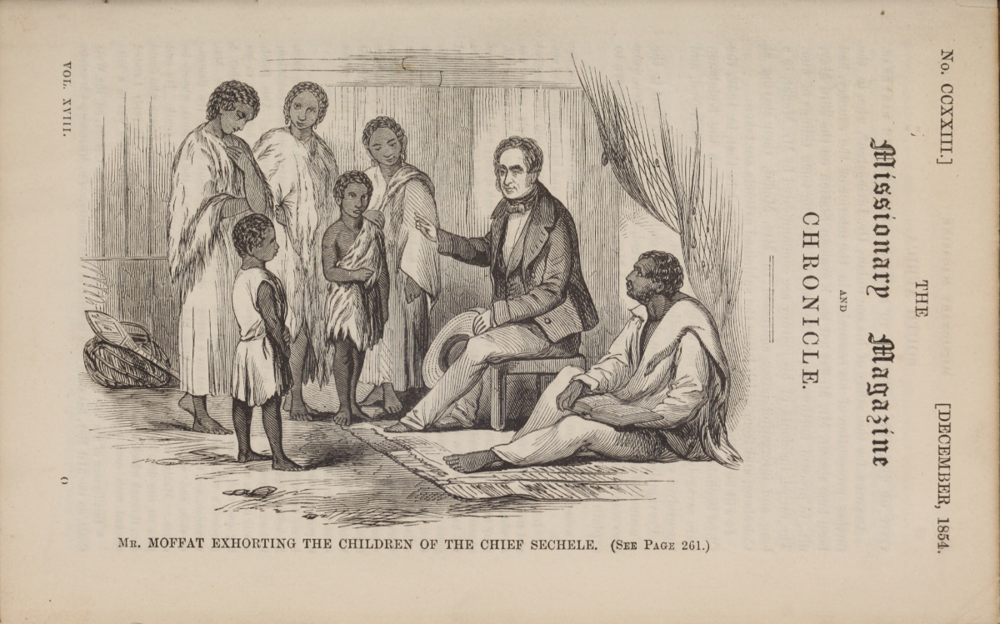
Mr. Moffat exhorting the children of the chief Sechele. Illustration from Missionary Magazine and Chronicle, December 1854, 255. Courtesy of the Internet Archive. Robert Moffat, who became Livingstone’s father-in-law, began work with the London Missionary Society among the southern BaTswana in 1816. He was among the missionaries preceding Livingstone to southern Africa that considered BaTswana initiation rites to be an obstacle to the introduction of Christianity.
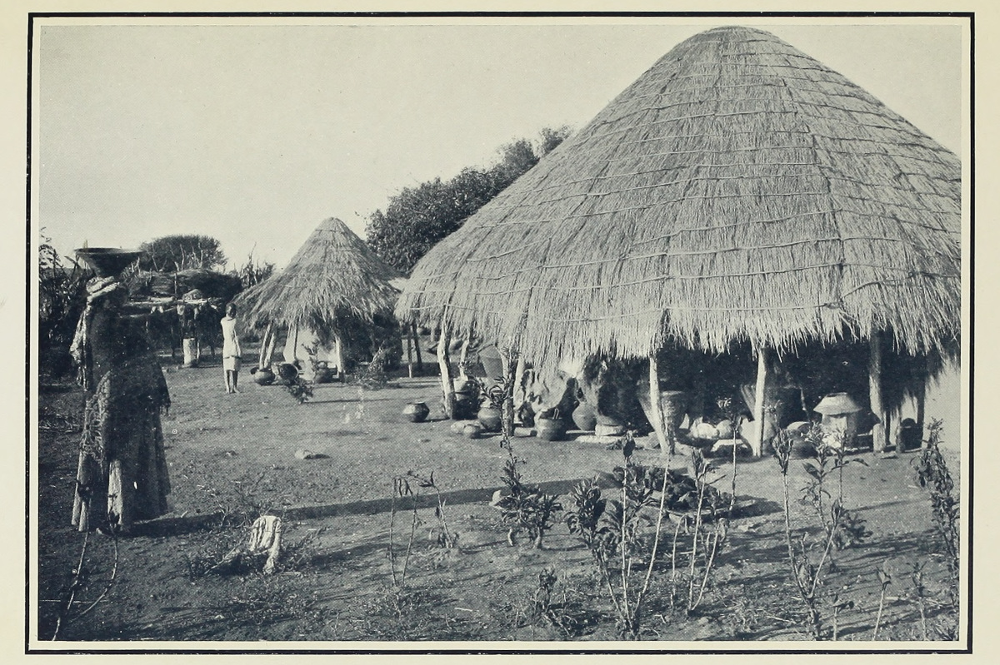
Scene in a village of the Bechuana. Illustration from J. Tom Brown, Among the Bantu Nomads (London: Seely, Service & Co., 1926) [page?]. Courtesy of the Internet Archive. Although Livingstone’s period in southern Africa predates this photograph, the image provides a sense of the habitations of the BaKwena and the other BaTswana groups that Livingstone regularly visited in his early missionary period.
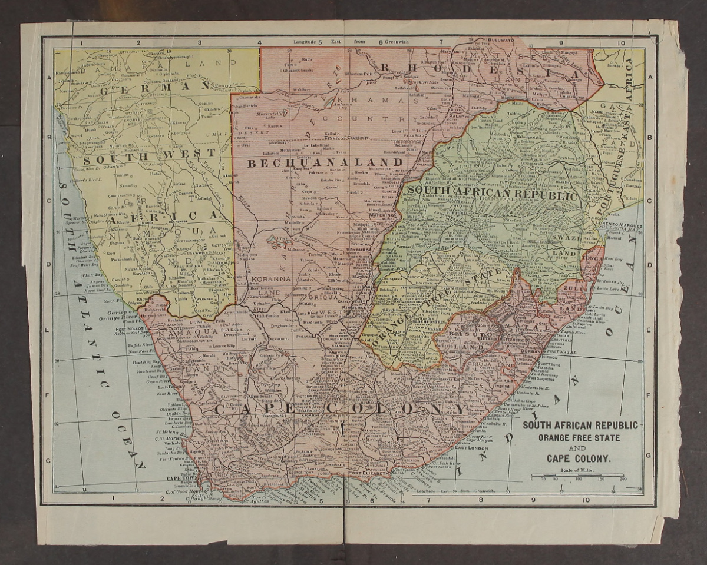
South African Republic, Orange Free State and Cape Colony. Map from Henry Houghton Beck, History of South Africa and the Boer-British War (Philadelphia: Globe Bible Publishing, 1900), n.p. Courtesy of the Internet Archive. This map details the political division of southern Africa as it existed at the end of the nineteenth century.
Google map of relevant locations. This map shows the locations in southern Africa referenced in the present section and indicates the distances between these locations. The locations identified are (left to right) Lake Ngami, Kuruman, Dimawe Hill, Kolobeng, Rustenburg, and Mokopane.
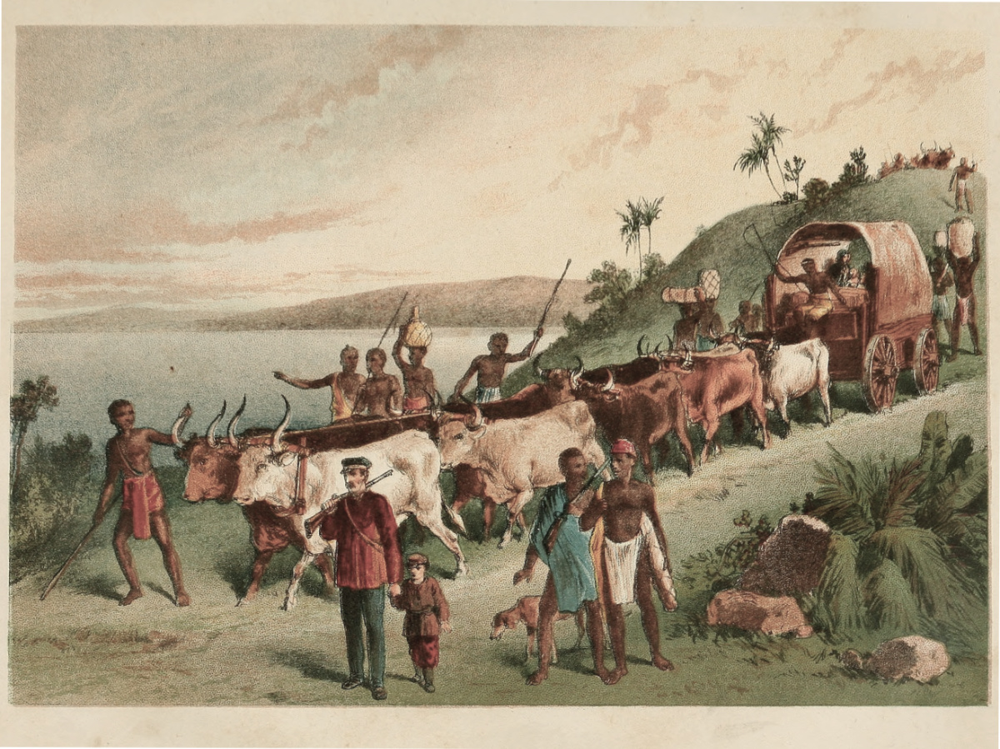
The arrival at Lake Ngami. Illustration from John S. Roberts, The Life and Explorations of David Livingstone L. L. D. (London: John G. Murdoch, 1870), frontispiece. Courtesy of the Internet Archive. Livingstone first crossed the Kalahari to reach Lake Ngami in 1849 in the company of William Cotton Oswell and Mungo Murray. In 1850 and 1851, Livingstone made two more journeys through the Kalahari with the aim of going further north to the Makololo. On the second of these expeditions, undertaken with Oswell, Livingstone reached the Makololo and then continued north for his first sighting of the Zambezi River.
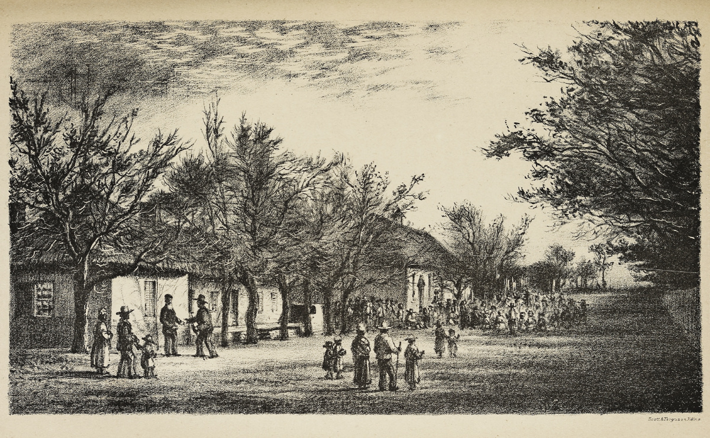
Sunday morning at Kuruman. Illustration from John MacKenzie, Ten Years North of the Orange River (Edinburgh: Edmonston and Douglas, 1871), opposite 72. Courtesy of the Internet Archive. Kuruman was established by Robert and Mary Moffat in the 1820s as a mission to the BaTlhaping (a BaTswana group) and became the centre of London Missionary Society activities in the region. Prior to the mission stations built by Livingstone in the 1840s, Kuruman was the furthest north of the LMS missions in southern Africa.
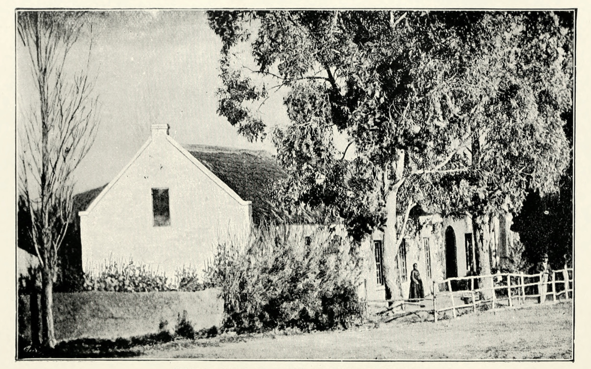
Common style of South African farmhouse. Illustration from John S. Moffat, The Lives of Robert & Mary Moffat (London: Fisher Unwin, 1885), 92. Courtesy of the Internet Archive. The mid-nineteenth-century Boer households that Livingstone visited in the Transvaal would have been similar in design to the farmhouse above.
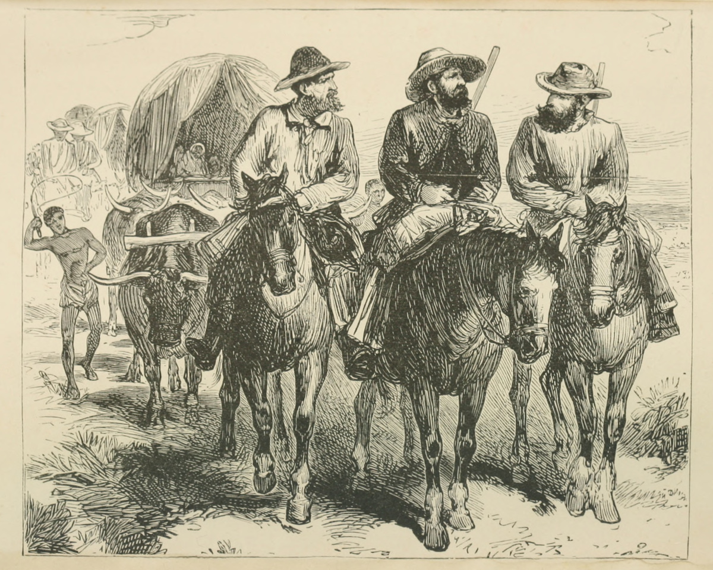
The Vee Boers. Illustration from Mayne Reid, The Vee-Boers: A Tale of Adventure in Southern Africa (London: George Routledge and Sons, 1885), frontispiece. Courtesy of the Internet Archive. Although Livingstone had considerable influence on popular opinion in Britain about the Boers, other perspectives circulated. The Victorian children’s novelist, Mayne Reid, heroised the Voortrekkers in an adventure book for boys, as exemplified in this illustration.
| 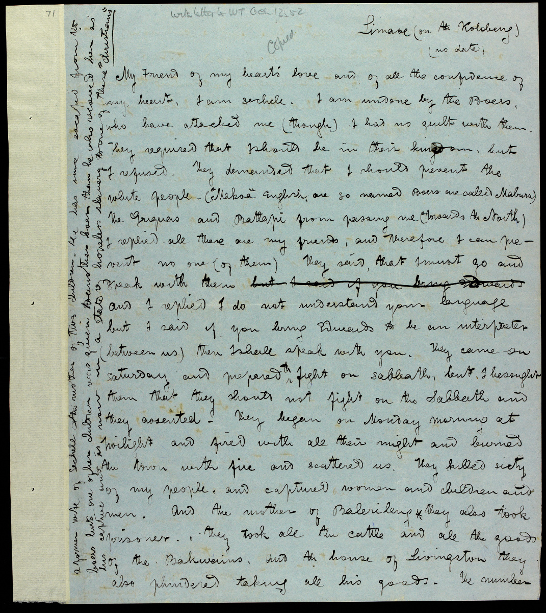 | 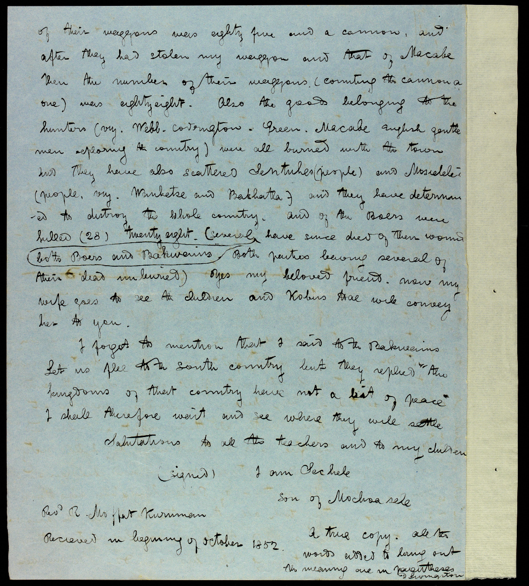 |
Letter to Robert Moffat I with speech (Sechele and Livingstone 1852:[1]-[2]). Images from SOAS Library, University of London. Images copyright Council for World Mission. Used by permission for private study, educational or research purposes only. Please contact SOAS Archives & Special Collections on docenquiry@soas.ac.uk for permission to use this material for any other purpose. As relevant, copyright Dr. Neil Imray Livingstone Wilson. Creative Commons Attribution-NonCommercial 3.0 Unported. This is Livingstone’s translation of a letter written by the BaKwena chief Sechele after the Battle of Dimawe in 1852. The battle pitted the BaKwena against the Boers. Livingstone included most of this letter, which provides Sechele’s account of the Boers’ military campaign, in Missionary Travels (Livingstone 1857aa:118-19).
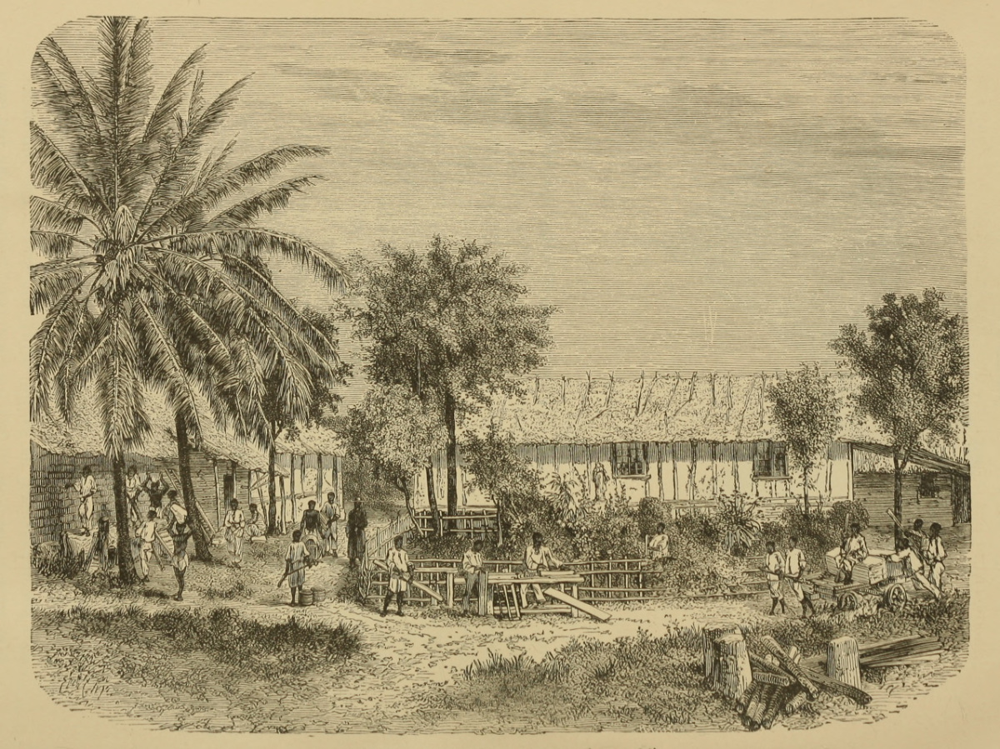
Mission station, Kolobeng. Illustration from J. E. Chambliss, The Life and Labors of David Livingstone, LL.D., D.C.L. (Philadelphia, Boston, and Cincinnati: Hubbard Bros., 1875), 75. Courtesy of the Internet Archive. Kolobeng was established in 1847 to the south-east of present-day Gaborone, Botswana. This was Livingstone’s third station and succeeded his previous missions at Mabotsa and Chonuane.
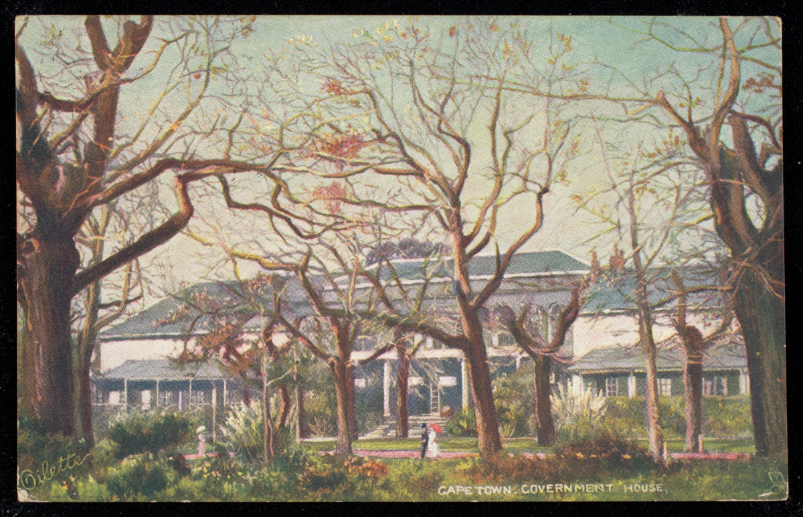
Postcard of Government House, Cape Town. Raphael Tuck & Sons, c. 1910. Courtesy of the Internet Archive. Built in the 1790s, the Government House historically served as an official residence of the Governor of the Cape. It was also the location of the first Cape Parliament held in 1854. Today, it is called De Tuynhuis and is the Cape Town office of South Africa’s President. [Can you cut the last two sentences?]
| 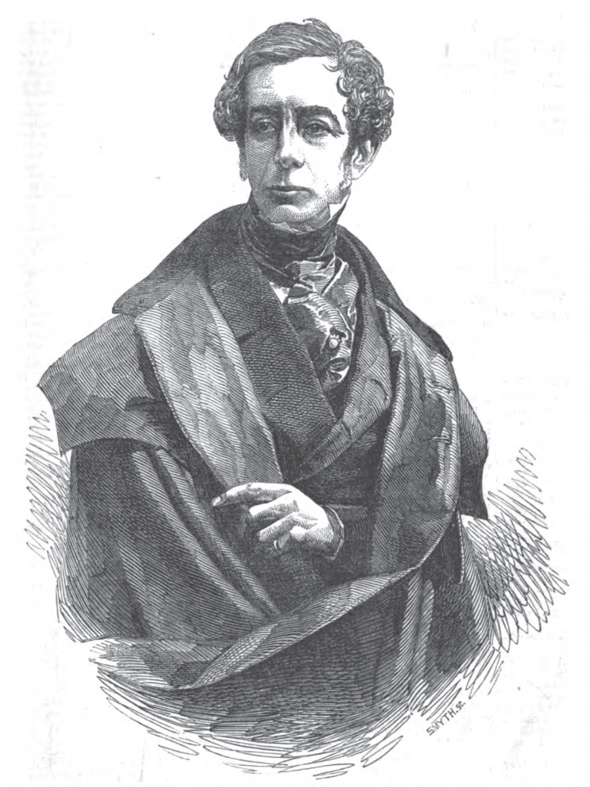 | 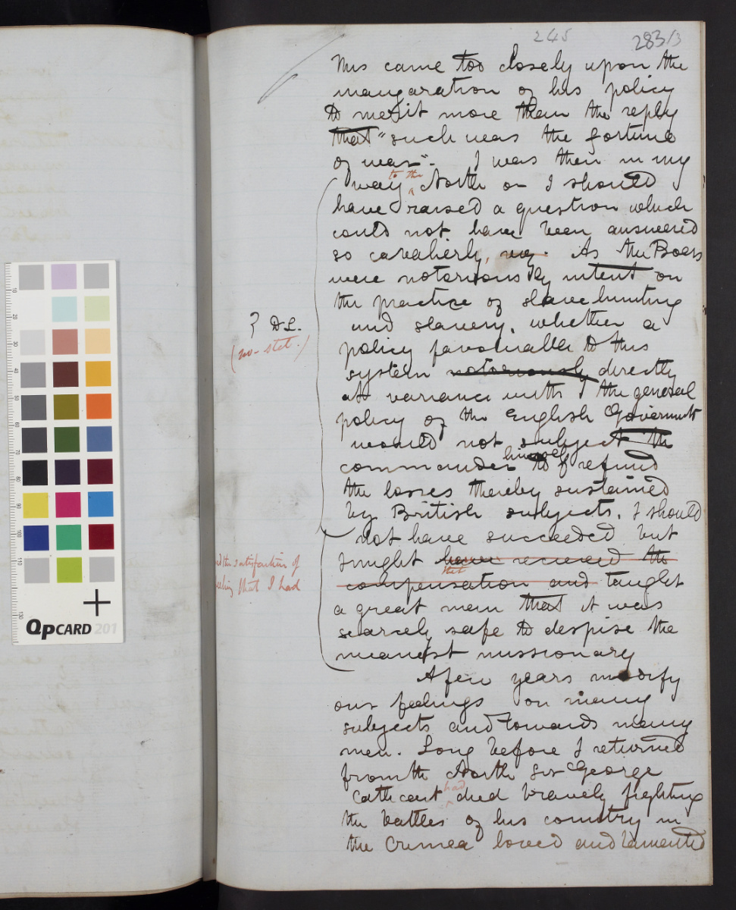 |
(Left; top in mobile) Major-General the Hon. George Cathcart, the Newly-Appointed Governor and Commander-in-Chief of the Cape of Good Hope. From a Daguerreotype by Claudet. Illustration from Illustrated London News, 7 February 1852, 125. Courtesy of the Hathi Trust. (Right; bottom in mobile) Image of a page from the Missionary Travels Manuscript (Livingstone 1857bb:[291]). Copyright National Library of Scotland and Dr. Neil Imray Livingstone Wilson (as relevant). Creative Commons Share-alike 2.5 UK: Scotland. The criticisms of George Cathcart on this manuscript page are marked up both by Livingstone and the editor, John Milton. The question mark and initials at margin left are in Livingstone’s hand. Milton’s marginal comment in red ink consists of an abbreviation of the word “query” along with “stet,” a proof correction mark for “let it stand.” The precise meaning of Milton’s annotation is unclear, but it is evident that he had reservations about retaining the passage.